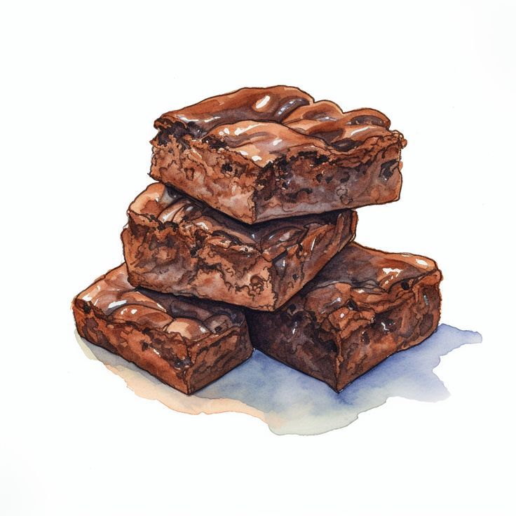

Brownies

A brownie is a rich, chocolate-flavored baked dessert, often dense and moist, with a slightly crispy crust on top. It's typically cut into small squares or rectangles and can be enjoyed on its own or with toppings like nuts, chocolate chips, or a scoop of ice cream.
Ingredients
- Dark Chocolate
- Butter
- Sugar
- Eggs
- Flour
- Cocoa Powder
Steps
- Preheat the oven to 350°F (175°C) and grease a baking pan.
- Melt the chocolate and butter together, stirring until smooth.
- Add the sugar to the melted mixture and mix well.
- Beat in the eggs, one at a time, until fully combined.
- Gently fold in the flour and cocoa powder until just mixed.
- Pour the batter into the prepared pan and smooth the top.
- Bake for 20-25 minutes, or until a toothpick comes out with a few moist crumbs.
- Allow the brownies to cool before cutting into squares. Enjoy!
Back to Home